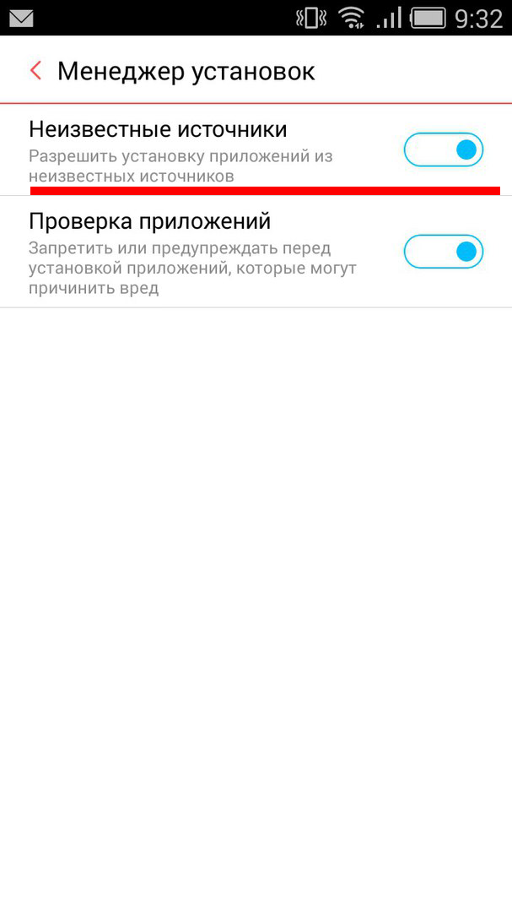
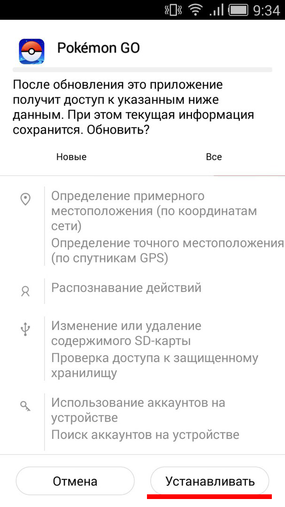

Встановити Pokémon GO
Pokemon GO на Андроїд   Користувачам даного виду пристроїв встановити гру буде трохи легше , ніж власникам айфонів . Хоча Google Play офіційно не презентував додаток в Україні ми підкажемо , де скачати Pokemon GO для Android можна вже зараз . У Україні гра офіційно ещо не вийшла ( Завантажити з Google Play не вийде ) .Скачати Pokémon GO 0.31.0 Download
В налаштуваннях безпеки смартфона необхідно дозволити встановлення програми з невідомого джерела , Встановити APK - файл гри .
Установка на IOS
Процедура установки для iOS трохи складніше . Вам доведеться прикинутися американцем ( австралійцем , новозеландцем ) і створити обліковий запис Apple ID в магазині App Store для США :
Вийдіть з магазину App Store : Налаштування - « iTunes Store і App Store »
Змініть регіон на США : Налаштування - Основні - Мова і регіон
Відкрийте програму App Store , через пошук знайдіть Pokemon Go . На першому місці буде , швидше за все , реклама якої іншої програми , просто перегорніть нижче
Натисніть кнопку GET поруч з назвою програми. Вона перетвориться в кнопку Install - натисніть і її .
Вам запропонують увійти в обліковий запис або створити новий. Правильна відповідь - Create New Apple ID
Вкажіть який-небудь зі своїх адрес електронної пошти, який ви не використали раніше для реєстрації Apple ID. Заповніть форму з особистими даними: будь-яким ім'ям, прізвищем, секретними питаннями, датою народження. Нижче краще вимкнути два «тумблера», щоб не отримувати розсилки
На наступному екрані виберіть варіант оплати: «None». Заповніть форму будь-яким американським адресою: просто відкрийте Google Maps, перейдіть в штати і подивіться адресу якоїсь будівлі. Наприклад: адреса 115 W 27th St, місто New York, штат NY, ZIP-індекс 10001
Ви отримаєте лист з посиланням для підтвердження адреси електронної пошти. Натисніть на посилання 'Verify now' і на сторінці, введіть адресу пошти і пароль, які вказали при реєстрації.
Повертайтеся в App Store, вводите пароль, знову тисніть GET і встановлюйте гру.
Після установки можна знову в налаштуваннях вибрати сой регіон, а також вийти з американського аккаунта і увійти в свій.
Важливо: щоб пізніше отримати оновлення для Pokemon Go, потрібно буде знову вийти з свого Apple ID і увійти в американський.
Якщо раптом у вас є американська банківська картка, то 7-му кроці виберіть її в якості способу оплати. Тоді ви зможете робити покупки всередині гри.